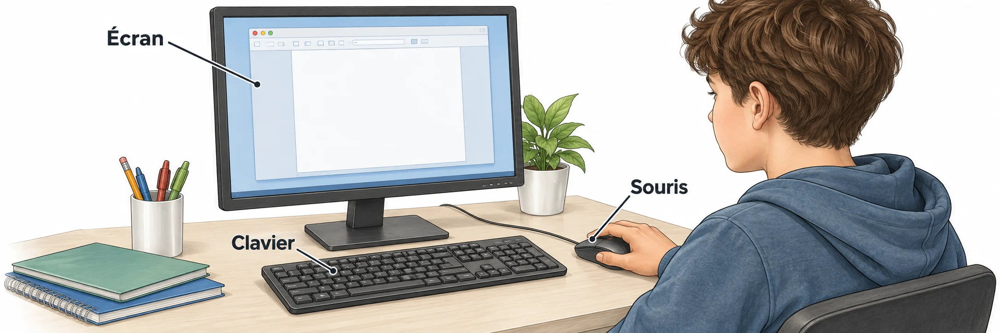

OBSERVER · EXPÉRIMENTER · EXPLIQUER
Le dossier numérique du club
Prépare le rangement des fichiers, puis crée le tableau de mesures sur le PC.

✎ Garde ta feuille à côté de toi.Ordinateur : manipulations et mesures simulées. Papier : relevés, réponses, calculs et croquis.
Q3 · Réaliser le tableau sur le PC
Crée Club, puis les sous-dossiers Mesures, Images et Sons.
- Q3 Dans le tableur, saisis : lampe, 240 g, oui ; gourde, 190 g, non ; support, 35 g, oui. Enregistre dans Club/Mesures, ferme puis rouvre. Compte les réussites. Qui peut lire ? Qui peut modifier ?
Dans le tableau : colonnes objet, masse_g, test_reussi. Une ligne par objet. Enregistre ton fichier dans Club/Mesures.
Q4 · Partager les fichiers
- Q4 Pour chaque fichier, indique « publication possible après vérification » ou « autorisation manquante ». Cite la vérification nécessaire. Donne deux gestes pour protéger ton compte.
Sur ta feuille
Garde tes réglages, tes résultats et tes explications dans l’ordre des questions.